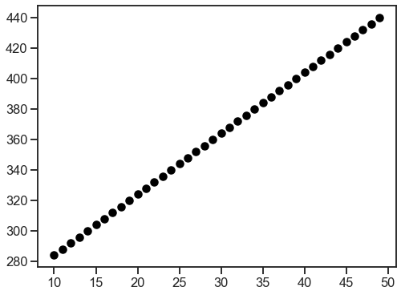
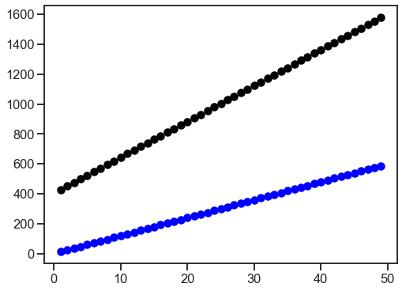

Network size scaling
Network size scaling#
import numpy as np
arr = np.zeros((10, 10))
arr.nbytes
800
arr = np.zeros((1, 1))
arr.nbytes
8
n_nodes_range = np.unique(np.geomspace(1, 100_000, 25, dtype=int))
n_nodes_range
array([ 1, 2, 4, 6, 11, 17, 28, 46,
74, 121, 195, 316, 510, 825, 1333, 2154,
3480, 5623, 9085, 14677, 23713, 38311, 61896, 100000])
n_edges_range = np.unique(np.geomspace(1, 10_000_000, 25, dtype=int))
n_edges_range
array([ 1, 3, 7, 14, 28, 56,
110, 215, 421, 825, 1615, 3162,
6189, 12115, 23713, 46415, 90851, 177827,
348070, 681292, 1333521, 2610157, 5108969, 10000000])
import pandas as pd
from graspologic.utils import cartesian_product
def numpy_n_bytes(n_nodes, n_edges):
return n_nodes * n_nodes * 8
pairs = cartesian_product(n_nodes_range, n_edges_range)
rows = []
for n, m in pairs:
n_bytes = numpy_n_bytes(n, m)
rows.append({"n_nodes": n, "n_edges": m, "n_bytes": n_bytes})
size_df = pd.DataFrame(rows)
import seaborn as sns
square_size_df = size_df.pivot(index="n_edges", columns="n_nodes", values="n_bytes")
square_size_df = np.log10(square_size_df)
sns.heatmap(square_size_df)
<AxesSubplot:xlabel='n_nodes', ylabel='n_edges'>
my_mem = 16 * 1e9
from scipy.sparse import csr_matrix
from graspologic.simulations import er_nm
import matplotlib.pyplot as plt
import seaborn as sns
sns.set_context("talk")
fig, ax = plt.subplots(1, 1, figsize=(8, 6))
m = 10
for n in range(10, 50):
A = er_nm(n, m)
csr_mat = csr_matrix(A)
n_bytes = csr_mat.data.nbytes + csr_mat.indptr.nbytes + csr_mat.indices.nbytes
ax.scatter(n, n_bytes, color="black")
fig, ax = plt.subplots(1, 1, figsize=(8, 6))
n = 100
for m in range(1, 50):
A = er_nm(n, m)
csr_mat = csr_matrix(A)
n_bytes = csr_mat.data.nbytes + csr_mat.indptr.nbytes + csr_mat.indices.nbytes
n_pred = 8 * m + 4 * m
ax.scatter(m, n_bytes, color="black")
ax.scatter(m, n_pred, color="blue")


ns = np.linspace(100, 1000, 10, dtype=int)
ms = np.linspace(1, 1000, 10, dtype=int)
Xs = cartesian_product(ns, ms)
Xs = np.repeat(Xs, 10, axis=0)
def calc_n_bytes(n, m, trials=10):
A = er_nm(int(n), int(m), directed=True)
csr_mat = csr_matrix(A)
return csr_mat.data.nbytes + csr_mat.indptr.nbytes + csr_mat.indices.nbytes
ys = []
for x in Xs:
ys.append(calc_n_bytes(*x))
Xs_coeffs = np.stack(
(
np.ones(len(Xs)),
Xs[:, 0],
Xs[:, 0] ** 2,
Xs[:, 1],
Xs[:, 1] ** 2,
Xs[:, 0] * Xs[:, 1],
)
).T
Xs_coeffs.shape
(1000, 6)
soln, resid, rank, s = np.linalg.lstsq(Xs_coeffs, ys, rcond=None)
print(np.array(soln))
[ 4.00000000e+00 4.00000000e+00 3.10862447e-15 1.20000000e+01
1.33226763e-15 -4.44089210e-16]
n = 100
m = 500
A = er_nm(n, m, directed=True)
csr_mat = csr_matrix(A)
n_bytes_observed = csr_mat.data.nbytes + csr_mat.indptr.nbytes + csr_mat.indices.nbytes
n_bytes_pred = 4 * n + 12 * m + 4
print(n_bytes_observed)
print(n_bytes_pred)
6404
6404
ns = np.linspace(10, 100_000, 100)
ms = np.linspace(10, 10_000_000, 100)
xs = cartesian_product(ns, ms)
ys = 4 * xs[:, 0] + 12 * xs[:, 1] + 4
# 4 * x + 12 * y + 4 = b
# 4*x + 12*y = b - 4
# 12 y = b - 4 - 4x
File "/var/folders/pz/l5ltdh6x63j99hyc0cy_3pvm0000gn/T/ipykernel_91168/2468000393.py", line 1
4 * x + 12 * y + 4 = b
^
SyntaxError: cannot assign to operator
xs = np.linspace(10, 200000, 100)
b = 16 * 1e9
ys = (b - 4 - 4 * xs) / 12
# for i in range(len(ys)):
# if ys[i] > xs[i]**2:
# ys[i] = xs[i]**2
fig, ax = plt.subplots(1, 1, figsize=(10, 10))
ax.plot(xs, ys, color="black")
# ax.plot(xs, xs**2, color='blue')
# ax.set(xlim=(0, 10_000), ylim=(0, 100_000))
# ax.set(xlim=(0, 200_000))
ax.set(xlabel="# of nodes", ylabel="# of edges")
[Text(0.5, 0, '# of nodes'), Text(0, 0.5, '# of edges')]
# const = soln
# n_linear = soln[0]
# m_linear = soln[1] # 0
# n_squared =
array([ 2.47636362e+02, 1.32000000e+00, -1.37861917e-12, 3.63636364e+01,
-2.04208004e-11, 2.51430821e-14, 1.01152560e-10, -1.99554349e-13,
0.00000000e+00])